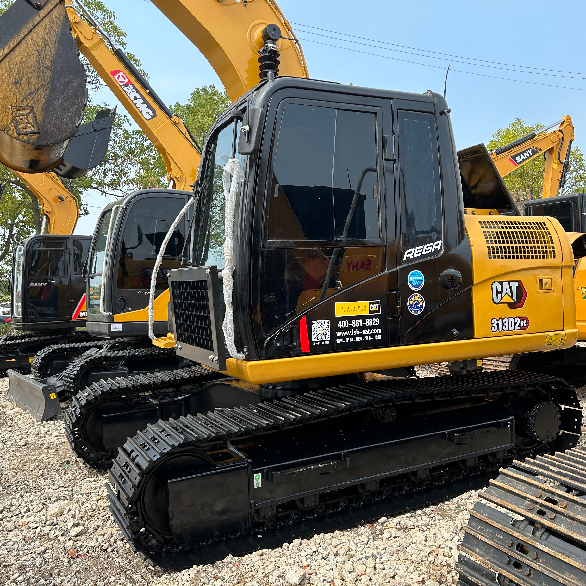

Refurbished Caterpillar Cat 313 Excavator
The Caterpillar Cat 313 Excavator is a versatile, powerful, and compact machine designed to handle a wide range of tasks in construction, demolition, landscaping, and utility work. Renowned for its durability, fuel efficiency, and exceptional performance, the Cat 313 is an excellent choice for businesses seeking a reliable and cost-effective solution. When refurbished, the Cat 313 provides a unique opportunity to acquire high-performance equipment at a fraction of the cost of purchasing a brand-new model.
Honestly, it's almost impossible to buy a brand new excavator from China. They either don't exist or are made in China. If a Chinese seller tells you their Caterpillar/Komatsu/Volvo/Kobelco/Hitachi is brand new, they're lying. Therefore, a refurbished excavator is your best bet.

Here are the detailed specifications for a refurbished Caterpillar Cat 313 excavator:
Operating Weight and Dimensions
- Operating Weight: 13,500–14,200 kg
- Transport Length: ~7.7–7.9 meters
- Transport Width: ~2.49 meters
- Transport Height: ~2.8–3.0 meters
- Tail Swing Radius: ~2.3–2.5 meters
- Track Width: 500 mm standard
- Counterweight: ~2.9 metric tons
Engine and Powertrain
- Engine Model: Cat C3.6 (Tier 4 Final / EU Stage V in newer builds; Tier 3 in older refurb units)
- Rated Power Output: ~74–82 kW (99–110 hp) @ 2,200 rpm
- Fuel Tank Capacity: ~250–280 liters
- Travel Speed: 3.0–5.0 km/h
- Swing Speed: ~11 rpm
- Altitude Capability: Up to 3,000 m without derate
Hydraulic System
- Main Pump Type: Load-sensing, variable displacement piston pumps
- Flow Rate: ~2 × 180–200 L/min
- System Pressure: Up to 31.5–34.5 MPa
- Hydraulic Oil Capacity: ~200–250 liters
- Smart Modes:
- Auto Dig Boost
- Heavy Lift Mode
- Auto Hydraulic Warm-Up
Performance Metrics
- Bucket Capacity: 0.5–0.7 m³ (SAE heaped)
- Max Digging Depth: ~5.5–5.8 meters
- Max Reach (Horizontal): ~8.5–9.0 meters
- Max Dump Height: ~5.6–5.8 meters
- Bucket Digging Force: ~100–110 kN
- Arm Digging Force: ~75–85 kN
Cab and Operator Features
- Cab Type: ROPS/FOPS certified
- Display: LCD monitor or touchscreen (varies by build year)
- Controls: Pilot-operated or electro-hydraulic joysticks
- Comfort: Adjustable air-suspension seat, HVAC, low-noise cab
- Visibility: Panoramic glass, optional rear-view camera, LED lighting
Smart Features and Efficiency
- Technology Suite (varies by build year):
- Cat Grade with 2D
- Grade Assist
- Payload Measurement
- Work Tool Recognition
- Operating Modes: Power, Smart, ECO
- Emissions Control:
- Tier 3: mechanical injection, no aftertreatment
- Tier 4 Final: DOC + DPF + SCR
- Ambient Capability:
- High temp: up to 52°C
- Cold start: down to –18°C
Attachments Compatibility
- Standard Bucket: 0.5–0.7 m³
- Optional Tools: Hydraulic breaker, demolition shear, ripper, compactor
- Quick Coupler: Hydraulic (Cat Pin Grabber or Smart Coupler)
Refurbishment Scope
Refurbished Cat 313 units typically include:
- Engine Overhaul: Turbocharger, injectors, cooling system, emissions service
- Hydraulic Restoration: Pump recalibration, valve block testing, hose replacement
- Electrical Diagnostics: Monitor, sensors, wiring harness, telematics
- Cab Reconditioning: Seat, joysticks, HVAC, repainting
- Structural Repairs: Boom/bucket welding, bushing replacement, undercarriage rebuild
Overview of the Caterpillar Cat 313 Excavator
The Caterpillar Cat 313 is a compact hydraulic excavator that offers powerful performance combined with advanced technology. Known for its strong hydraulic system, superior digging capabilities, and smooth operating experience, the Cat 313 is a popular choice among contractors who require precision and durability in a wide range of applications.
With an operating weight that provides excellent stability without being too heavy for tighter spaces, the Cat 313 is well-suited for use in urban and confined environments. Its exceptional fuel efficiency and low operating costs make it a favorite among business owners and operators looking to maximize their return on investment.
Key Specifications of the Caterpillar Cat 313 Excavator
-
Operating Weight: Approximately 13,000 - 14,500 kg (28,600 - 32,000 lbs)
-
Engine Power: 85 - 90 hp (63 - 67 kW)
-
Max Digging Depth: Up to 6.1 meters (20 feet)
-
Maximum Reach: Around 8.5 meters (28 feet)
-
Bucket Capacity: Typically 0.6 - 1.0 cubic meters (21 - 35 cubic feet)
-
Fuel Tank Capacity: About 200 - 250 liters (53 - 66 gallons)
-
Travel Speed: Up to 5.4 km/h (3.4 mph)
These specifications demonstrate that the Cat 313 offers the right balance of power and compactness for a wide range of tasks, whether digging trenches, lifting materials, or performing precision grading.
Performance and Efficiency of the Cat 313
One of the standout features of the Caterpillar Cat 313 Excavator is its efficient use of power. The machine’s advanced hydraulic system ensures smooth and fast operation, while its fuel-efficient engine helps keep operating costs low.
Performance Highlights:
-
High Hydraulic Efficiency: The Cat 313 features an advanced hydraulic system that allows for efficient power transfer, ensuring faster cycle times and more precise control. Whether performing delicate operations or heavy-duty digging, the machine's hydraulic performance is designed to handle it all.
-
Fuel-Efficient Engine: Caterpillar’s fuel-efficient engines are designed to provide maximum power while minimizing fuel consumption. The Cat 313 is engineered to reduce fuel costs, making it an excellent choice for contractors looking to maximize their operating efficiency.
-
Strong Lifting and Digging Power: With its powerful engine and robust hydraulic system, the Cat 313 can handle a wide range of applications. From digging through tough soil to lifting heavy materials, this excavator performs effectively and reliably.
-
Smooth Operation: The Cat 313 is designed for smooth, responsive operation. The machine's controls and hydraulic systems are engineered to work in perfect harmony, allowing operators to complete tasks with precision and ease.
Durability and Longevity of the Cat 313
Caterpillar has built a reputation for manufacturing machines that stand the test of time, and the Cat 313 is no exception. Designed for durability, this excavator can withstand harsh working conditions and maintain peak performance over the long term.
Durability Features:
-
Reinforced Structure: The Cat 313 features a reinforced boom, arm, and undercarriage, all of which are built to endure the heavy demands of excavation work. Whether you're working in rocky or uneven terrain, the machine's structure is designed to maintain stability and performance.
-
Durable Undercarriage: The undercarriage of the Cat 313 is designed to handle tough conditions. Regular maintenance and monitoring of wear parts like tracks and sprockets will ensure that the excavator remains operational for many years.
-
Engine Longevity: The engine is built for durability, offering long hours of operation before needing major service. Caterpillar engines are renowned for their longevity, and the Cat 313 continues this tradition, providing long-term value for owners.
Comfort and Safety of the Cat 313
The Cat 313 has been designed with operator comfort and safety in mind. Whether working long hours or in difficult conditions, the excavator provides an ergonomic, secure, and comfortable environment for the operator.
Comfort and Safety Features:
-
Spacious and Ergonomic Cabin: The cabin of the Cat 313 is designed to be spacious and comfortable, with ergonomic seating and controls that reduce operator fatigue. This allows operators to focus on their tasks without distractions or discomfort.
-
Visibility: The Cat 313 offers excellent visibility, thanks to large windows and strategically placed mirrors. Good visibility helps reduce the risk of accidents and ensures that operators can work safely and efficiently.
-
Safety Features: Caterpillar equips the Cat 313 with a range of safety features, including rollover protection (ROPS) and falling object protection (FOPS). These features provide additional protection for the operator, particularly in hazardous environments.
-
Enhanced Control Systems: The Cat 313 includes advanced control systems that provide smooth, precise movement. These systems help operators perform delicate tasks with ease, increasing safety and productivity.
Versatility and Attachments for the Cat 313
The Cat 313 is a highly versatile excavator that can be fitted with a variety of attachments to increase its functionality. From digging and lifting to grading and demolition, the Cat 313 can handle it all with ease.
Common Attachments for the Cat 313:
-
Buckets: The Cat 313 can be equipped with various types of buckets, such as general-purpose buckets, heavy-duty buckets, or grading buckets, depending on the type of material being moved or dug.
-
Hydraulic Breakers: A hydraulic breaker attachment allows the Cat 313 to perform demolition tasks with precision, breaking through concrete, asphalt, or rock.
-
Augers: For drilling holes or installing posts, the Cat 313 can be fitted with an auger attachment. This is particularly useful in applications such as fence installation or utility work.
-
Grapples: A grapple attachment allows the Cat 313 to handle materials like scrap metal or logs, improving efficiency in material handling tasks.
-
Quick Couplers: The Cat 313 can be equipped with quick couplers to allow rapid switching between different attachments, reducing downtime and increasing overall productivity.
Benefits of Purchasing a Refurbished Caterpillar Cat 313 Excavator
A refurbished Cat 313 offers several advantages, especially for businesses seeking high-quality machinery at a lower cost. Purchasing a refurbished machine allows you to benefit from the same high-performance features as a new model, while significantly reducing your upfront investment.
Key Benefits:
-
Cost Savings: Refurbished Cat 313 excavators are much more affordable than new models, offering a significant cost-saving advantage while maintaining high-quality performance.
-
Thorough Inspection and Reconditioning: Refurbished Cat 313 excavators undergo a rigorous inspection and reconditioning process, ensuring that any worn or damaged parts are replaced with genuine Caterpillar components. This ensures that the machine is ready to operate at peak performance when it arrives at the job site.
-
Warranty: Many refurbished Cat 313 excavators come with a warranty, offering peace of mind and protection against unforeseen mechanical issues.
-
Sustainability: By purchasing a refurbished Cat 313, you are contributing to the sustainable use of equipment, reducing the need for new manufacturing and minimizing the environmental impact.
Maintenance Tips for the Caterpillar Cat 313 Excavator
To maximize the lifespan and performance of the Cat 313, regular maintenance is essential. Proper care ensures that the machine operates efficiently and avoids costly repairs.
Maintenance Recommendations:
-
Engine Maintenance: Change the engine oil and air filters at regular intervals, check the fuel system for leaks, and monitor the coolant levels to prevent overheating.
-
Hydraulic System: Inspect hydraulic hoses for leaks and clean hydraulic filters to ensure smooth operation and prevent damage to the system.
-
Undercarriage Care: Regularly check the undercarriage for wear and tear, lubricate the tracks, and inspect sprockets and rollers to ensure the undercarriage remains in good condition.
-
Attachment Maintenance: Ensure that attachments are regularly inspected for wear, particularly the bucket, arm, and pins. Replace worn parts promptly to avoid more serious issues.
Conclusion
The Caterpillar Cat 313 Excavator is a highly reliable and versatile machine that offers excellent performance and fuel efficiency. Whether working in construction, landscaping, or demolition, this compact excavator provides the power and precision needed for a wide variety of tasks. By purchasing a refurbished Cat 313, businesses can save on costs while still enjoying the durability and high performance that Caterpillar machines are known for. With its strong engine, efficient hydraulic system, and exceptional durability, the Cat 313 remains a top choice for businesses looking for a cost-effective solution for their excavating needs.
Our Commitment
- 2 years / 4000 hours warranty.
- EPA certified.
- No sweatshop labor.
Contacts

- [email protected]
- Youtube Instagram Facebook
- Navigation: G206 (Sishu Bridge) in Changfeng County, Hefei City, Anhui Province, 200 meters north to the east